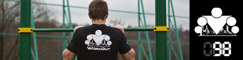

Последний из
Сегодня следует хорошенько размяться, потому что упражнения мы будем делать по принципу "пирамидки". Кто не первый день занимается, или помнит своё дворовое детство, тот хорошо знает о чем пойдет речь, ну а для всех остальных будет небольшая инструкция.
После хорошей разминки (со всадником на 30-60 секунд) сразу переходите к комплексу из трёх упражнений. Вы выполните его всего 1 раз, с полным восстановлением между упражнениями (5-7 минут, вы должны восстановиться, но не должны "остыть"). Ну и как всегда помним про качество выполнения!
1. Подтягивания. Делаем 1 раз, слезаем с турника, делаем 2 раза, слезаем, делаем 3 раза и т.д., пока не достигнете максимума. После этого начинайте двигаться вниз. То есть, если ваш максимум был 10, то затем вы делаете 9, 8, 7 и т.д. Если не можете сделать 7 за один подход, разбейте на несколько подходов (каждый должен быть на максимум!), главное - сделать нужное количество. И так двигаетесь вниз до 1. Отдыха между подходами нет, слезли с турника, встряхнули руки и обратно на турник!
2. Отжимания. Делаем отжимания по такой же схеме, только прибавлять (и потом отнимать) будем сразу по 2 повторения. То есть сделали 2, встали, сделали 4, встали и т.д. до максимума. Тоже без отдыха между подходами.
3. Приседания. Делаем по такой же схеме, только прибавлять (и потом отнимать) будем сразу по 5-10 (в зависимости от вашего уровня). То есть сделали 10, встали в полный рост, встряхнулись, сделали 20, встали, встряхнулись и т.д. Опять же отдыха между подходами нет.
Сразу рекомендуем заснять свой подвиг на видео, потому что если действительно всё сделать на максимум, то такую штуку повторить ещё не скоро получится!
И это была ПОСЛЕДНЯЯ тренировка в рамках нашей программы, так что после её окончания можете похлопать самим себе. Ну а завтра мы будем отдыхать и подводить итоги.
P.S. Пересчитайте, сколько вы всего сделаете повторений в каждом упражнении и, при желании, можете поделиться своим результатом в комментариях